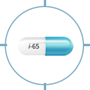

JOIN US FOR A SPECIAL WEBINAR ABOUT OUR BREAKTHROUGH ANTIFUNGAL INNOVATION, TOLSURA
REGISTER TO JOINRIGHT ON TARGET
When Ctrough was corrected for dose administration, the relative bioavailability of TOLSURA was nearly 2x that of conventional itraconazole capsules.
| Parameter* | TOLSURA 130 mg twice daily (2 x 65 mg Capsules) | Itraconazole 200 mg twice daily (2 x 100 mg Capsules) |
|---|---|---|
| AUCO-tau (hr•ng/ml) | 15,600 ± 3,700 | 14,900 ± 3,800 |
| Cthrough (ng/ml) | 1,200 ± 400 | 1,000 ± 300 |
| Cmax (ng/ml) | 1,600 ± 400 | 1,500 ± 400 |
Patients with a mean Ctrough level of >1,034 ng/mL6,†
TOLSURA 65 mg‡
Itraconzole 100 mg1,6
The bioavailability of TOLSURA at steady state, under fed conditions was determined by a comparative pharmacokinetic study with 100 mg itraconazole capsules. 16 healthy subjects were dosed orally immediately after a meal, twice-daily for 14.5 days.